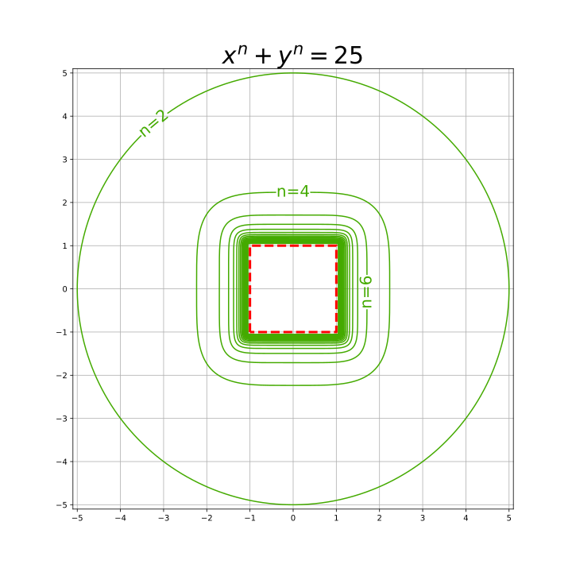
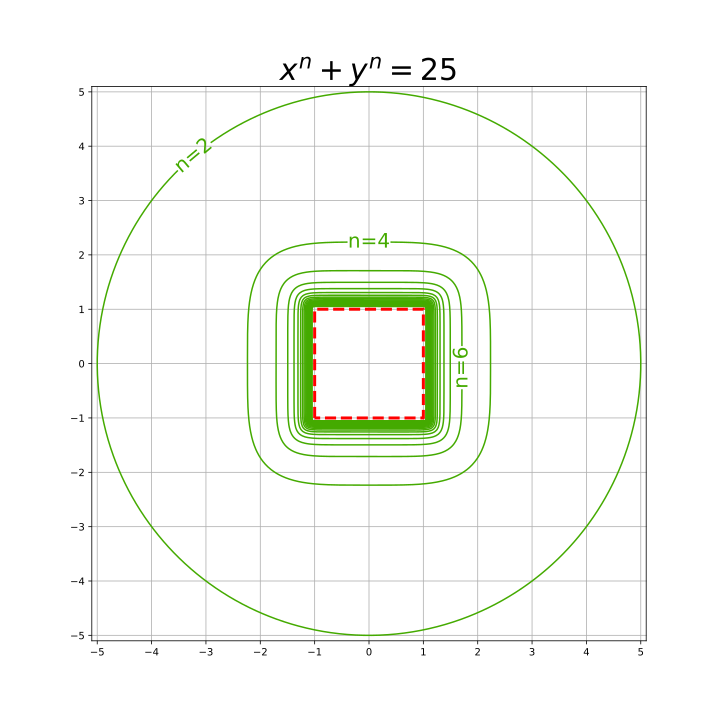

２次元最高！
1. \( 10 e^{0.1x} \sin{3x} \) のMaclaurin近似
2. \( \sin(\frac{\pi}{2}x) \) の合成
3. \( e^{\sin{x}} \)の合成
4. \( \cos(x) \) のTaylor近似(x=5まわり)
5. \( x^2 + y^2 = 25 \) は円。じゃあ、 \( x^4 + y^4 = 25 \) は？

左端のロゴをクリックすると、
ホームに戻れます。
1. \( 10 e^{0.1x} \sin{3x} \) のMaclaurin近似
2. \( \sin(\frac{\pi}{2}x) \) の合成
3. \( e^{\sin{x}} \)の合成
4. \( \cos(x) \) のTaylor近似(x=5まわり)
5. \( x^2 + y^2 = 25 \) は円。じゃあ、 \( x^4 + y^4 = 25 \) は？
